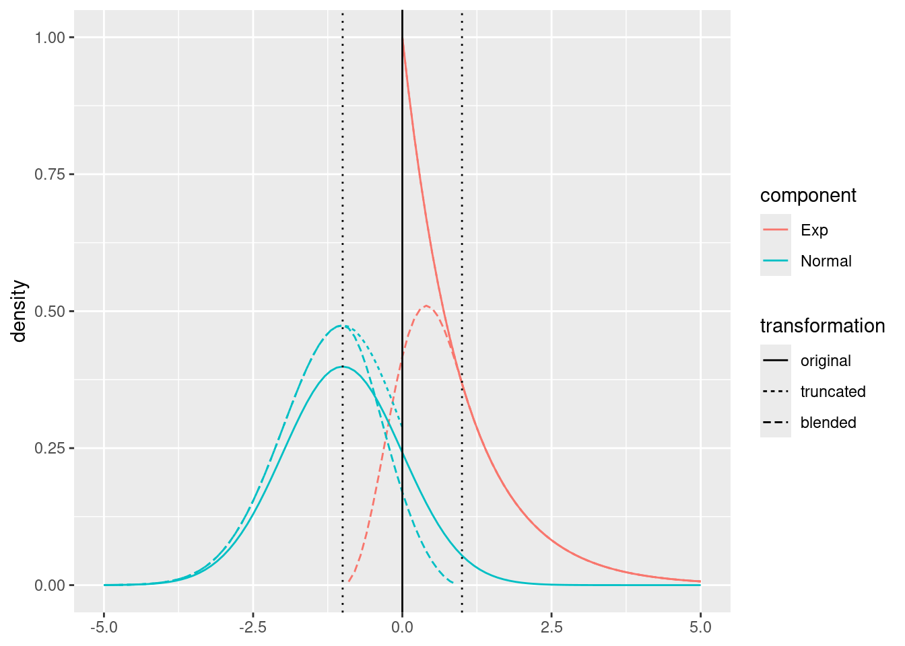
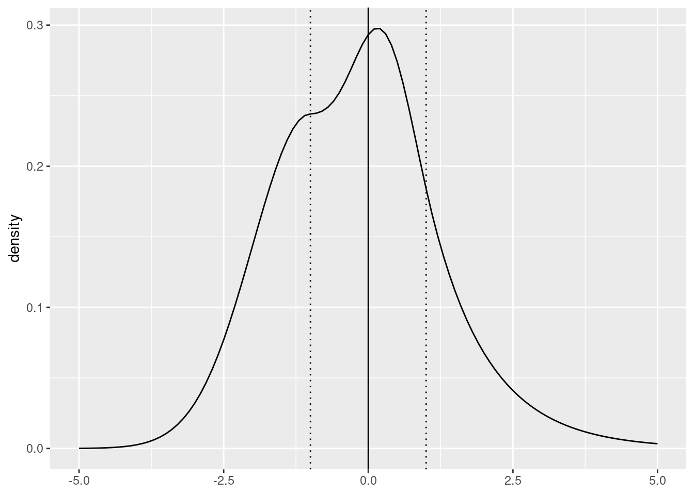
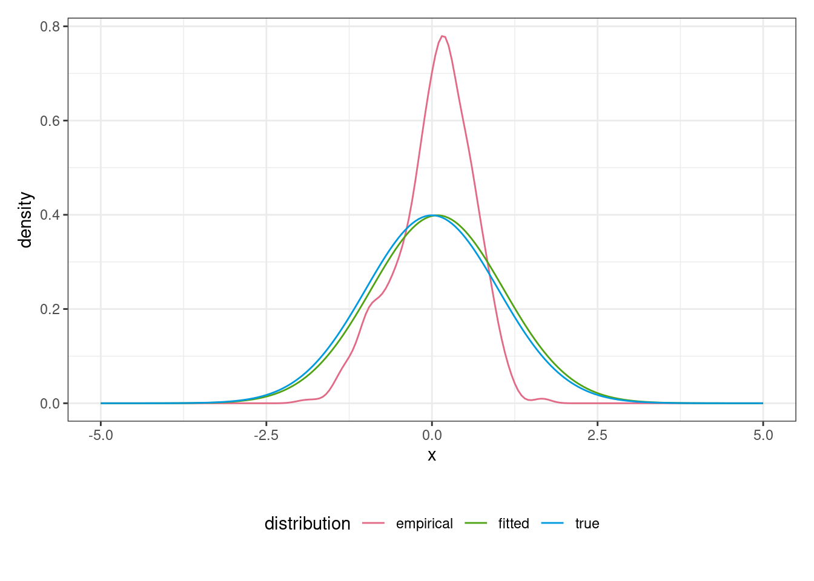

Fitting Distributions and Neural Networks to Censored and Truncated Data: The R Package reservr
Alexander Rosenstock
ARAG SE
Source:
vignettes/jss_paper.Rmd
jss_paper.RmdAbstract
Random truncation, i.e. truncated observations where the point of truncation varies by observation, and interval censoring arise naturally in various fields, such as insurance, operations research or medicine. This article presents the R package reservr, which implements distribution parameter estimation and distributional regression for randomly truncated and interval censored data based on (conditional) maximum likelihood. The package provides a flexible interface to specify (weighted) randomly truncated and interval censored observations, to specify distribution families to be estimated, and to compute (conditional) maximum-likelihood based parameter estimates. Distributional regression is supported via an interface to the R package tensorflow to build neural network models for distributional regression of censored and randomly truncated outcomes with arbitrary distribution families. The interface allows for arbitrary network architectures, including multi-modality and pre-initialization of network weights from a global parameter estimate to improve stability. Additional utilities for application in a general insurance context, as well as the usual random sampling, density, probability and quantile functions for distributions are provided.
1 Introduction
Statistical analyses are typically concerned with modelling and estimating the distribution of some measured variable of interest \(Y\), called the outcome, possibly conditional on the value of one or several endogenous variables \(X\), called predictors. In the absence of endogenous variables, this process is usually called distribution fitting, and in the presence of endogenous variables it is called regression. Classical regression, such as via generalized linear models (GLMs), is concerned with the influence of endogenous variables on the mean of the outcome, i.e., \(\mathsf{E}(Y|X) = f(X)\), and often links other parameters of the conditional outcome distribution to its mean. A gentle introduction to generalized linear models can be found in Dobson and Barnett (2018). An implementation of GLMs is available in the stats R package, which is part of R itself (R Core Team 2023). Some models also allow specification of additional parameters of the conditional outcome distribution, such as Generalized Additive Models for Location, Scale and Shape (Stasinopoulos and Rigby 2007). More recently, deep distributional regression has been proposed, which allows for flexible specification of individual outcome distribution parameters (Rügamer et al. 2023).
Statistical methods (such as those described and implemented in the previously mentioned papers) often require complete data, that is full information on all observations \((X, Y)\) of interest. In this paper, we describe an R-package that allows for distributional regression in three common observation schemes that do not provide complete data. First of all, data with interval censoring applied to the outcome \(Y\) refers to the case where only lower and upper bounds for \(Y\) are observed, instead of the actual value. Next, truncated data misses observations for which the outcome \(Y\) falls out of a certain lower and upper truncation bound. We consider the case of random truncation, where these truncation bounds are also random variables that may vary for each observation. Finally, we consider a combination of the two, randomly truncated interval censoring.
The three scenarios can be combined into a single general scheme: instead of observing the real-valued target variable \(Y\) (with \(\mu\)-density \(f_\theta\) and c.d.f. \(F_\theta\), where \(\mu\) is a sigma-finite measure on \(\mathbb R\) and \(\theta\) is a parameter vector in some parameter space \(\Theta\)), we observe the vector \((M, V, L, U)\), which satisfies \(L \le M \le V \le U\) and \(L<U\). Its coordinates have the following interpretation: the last two coordinates, which satisfy \(-\infty \le L < U \le \infty\), encode truncation: we only happen to observe \((M, V, L, U)\) if \(L < Y \le U\); in particular, a non-truncated observations means that \(L = -\infty\) and \(U = \infty\). The first two coordinates, which satisfy \(L \le M \le V \le U\) and which may be \(\mp \infty\), encode censoring: the observation \((M, V) = (m, v)\) means that the target variable \(Y\) satisfies \(Y \in (m, v]\) if \(m < v\) and \(Y = m\) if \(m = v\); the latter corresponds to an uncensored observation of \(Y\).
It is instructive to focus on the simpler problem of distribution parameter estimation before proceeding with distributional regression. Suppose we observe an independent sample \(\mathcal J = \{(m_i, v_i, l_i, u_i): i=1, \ldots, n\}\) of \((M, V, L, U)\). Suggested by standard maximum (conditional) likelihood approaches for truncated (Dörre and Emura 2019) and censored observations (Sun 2006), we suggest to estimate \(\theta\) by maximizing the objective function \[\begin{align} \ell(\theta) = \sum_{(m, v, l, u) \in \mathcal J} \Big\{ \log f_\theta(m) \mathbf{1}(m=v) + \log F_\theta((m,v]) \mathbf{1}(m<v) \Big\} - \log F_\theta((l,u]), \tag{1.1} \end{align}\]
where we use the notation \(F_\theta((l, u]) = F_\theta(u) - F_\theta(l)\). A detailed motivation for this approach under suitable conditions ensuring that the censoring is non-informative is given in Section 1.1 below. For later purposes, it is helpful to attach a weight \(w_i\) to each observation \((m_i, v_i, l_i, u_i)\). Denoting the resulting sample by \(\mathfrak{I} = \{(m_i, v_i, l_i, u_i, w_i)\}\), we aim at maximizing the weighted sum of the (conditional) log-likelihoods \[\begin{align} \ell(\theta) = \sum_{(m, v, l, u, w) \in \mathfrak{I}} w \cdot \Big[ \Big\{ \log f_\theta(m) \mathbf{1}(m = v) + \log F_\theta((m, v]) \mathbf{1}(m < v) \Big\} - \log F_\theta((l, u]) \Big]. \tag{1.2} \end{align}\]
A practical example of random truncation arises when modelling the reporting delay of claims in general insurance. The target variable \(Y\) is the reporting delay of an accident happening at accident time \(T_0\), which is hence reported to the insurer at calendar time \(Y+T_0\). The truncation bounds \((L, U)\) for \(Y\) will be equal to \((0, \tau - T_0)\) with \(\tau\) the current calendar time.
Combined random truncation with interval censoring can occur when modelling failure times when only survival data at two (or more) maintenance appointments some time after purchase is captured, and only for items that are sold. The target variable \(Y\) is the failure time of an item. Item condition (failed / functional) can be observed at maintenance times \(M_0\) and \(M_1\), which may vary for each item. For each maintained item, the production time \(P_0\) and the purchase time \(P_1\) is also known. Only items that are functional at purchase time \(P_1\) are observed at the maintenance times. This gives rise to truncation bounds \((L, U) = (P_1 - P_0, \infty)\) and censoring interval bounds \((M, V) \in \{ (P_1 - P_0, M_0 - P_0), (M_0 - P_0, M_1 - P_0), (M_1 - P_0, \infty) \}\), depending on the item condition at times \(M_0\) and \(M_1\).
In the setting of distributional regression, weighted samples \(\mathfrak{I}\) \((M, V, L, U, W)\) have associated predictors \(X \in \mathfrak{X}\), resulting in observations of the shape \(\mathfrak{I}_{\text{reg}} = \{(m_i, v_i, l_i, u_i, w_i, x_i) : i = 1, \ldots, n\}\). We are interested in estimating a regression function \(g : \mathfrak{X} \to \Theta\) given a sample \(\mathfrak{I}_{\text{reg}}\), a parameterized family \(\mathcal{F} = \{F_\theta \mid \theta \in \Theta\}\) and a family \(\mathcal{G}\) of functions from \(\mathfrak{X}\) to \(\Theta\). It is assumed that there exists a fuction \(g \in \mathcal G\) such that the conditional distribution of \(Y | X = x\) is \(F_{g(x)}\). Distributional regression can be formulated as the maximization problem \[\begin{align} \hat g & \in \mathop{\mathrm{arg\,max}}_{g \in \mathcal{G}} \ell(g | \mathfrak{I}_{\text{reg}}) \text{, where} \nonumber \\ \ell(g | \mathfrak{I}_{\text{reg}}) & := \sum_{(m, v, l, u, w, x) \in \mathfrak{I}_{\text{reg}}} w \cdot \begin{cases} \log f_{g(x)}(m) - \log F_{g(x)} ((l, u]) & m = v \\ \log F_{g(x)}((m, v]) - \log F_{g(x)}((l, u]) & m < v \end{cases}. \tag{1.3} \end{align}\]
Compared to Equation (1.2), the global parameter \(\theta\) is replaced by the regression function \(g\) evaluated at the associated predictors \(x\).
1.1 Motivation of Equation (1.1).
It is instructive to start by considering an untruncated, censored observation where \(l = -\infty, u = \infty\) and \(m < v\). The only information we obtain from the observation \((m, v, l, u)\) is then that \(Y \in (m, v]\). For deriving the relevant likelihood contribution, we may follow the stochastic approach to interval censored observations described in : let \((C_1, C_2)\) denote a random vector in \(\mathbb R^2\) that is independent of the target variable \(Y\) and which satisfies \(\mathsf{P}(C_1 < C_2) = 1\). Let \[\begin{align*} D & := \mathbf{1}(Y > C_1) + \mathbf{1}(Y > C_2), \end{align*}\]
and define new random variables \((M, V) = f(Y,C_1,C_2)\) by \[\begin{align*} (M, V) & := \begin{cases} (-\infty, C_1), & D = 0, \\ (C_1, C_2), & D = 1, \\ (C_2, \infty), & D = 2. \end{cases} \end{align*}\]
Note that \(D\) can be reconstructed from \((M, V)\): we have \(D=0\) if \(M=-\infty\), \(D=1\) if \(-\infty<M<V<\infty\) and \(D=2\) if \(V=\infty\).
It is instructive to proceed with the case where \((C_1, C_2)\) and hence \((M, V)\) is discrete. Then, for \((m,v) \in \mathrm{supp}(M,V) \cap \mathbb R^2\), we have \[\begin{align*} \mathsf{P}(M = m, V = v) & = \mathsf{P}(M = m, V = v, D = 1) \\ & = \mathsf{P}(C_1 = m, C_2 = v, Y \in (m, v]) \\ & = F_\theta((m, v]) \cdot \mathsf{P}(C_1 = m, C_2 = v). \end{align*}\]
Likewise, for \((m,v) \in \mathrm{supp}(M, V) \cap (\{-\infty\} \times \mathbb R)\), we obtain \[\begin{align*} \mathsf{P}(M = -\infty, V = v) & = \mathsf{P}(M = -\infty, V = v, D = 0) \\ & = \mathsf{P}(C_1 = v, Y \le v) \\ & = F_\theta((-\infty, v]) \cdot \mathsf{P}(C_1 = v) \end{align*}\]
and finally, for \((m,v) \in \mathrm{supp}(M,V) \cap (\mathbb R \times \{\infty\})\), \[\begin{align*} \mathsf{P}(M = m, V = \infty) & = \mathsf{P}(M=m, V=\infty, D=2) \\ & = \mathsf{P}(C_2 = m, Y > m) \\ & = F_\theta((m, \infty]) \cdot \mathsf{P}(C_2 = m). \end{align*}\]
If we assume that the distribution of the censoring variable \((C_1,C_2)\) is non-informative, i.e., its distribution does not depend on \(\theta\), the likelihood of observing \((M, V) = (m, v)\) is equal to \(F_\theta((m, v])\), up to a factor that does not depend on \(\theta\). A similar argumentation can be used in the non-discrete case. Overall, noting that \(F_\infty((-\infty, \infty]) = 1\), we have motivated the likelihood contribution \(F_\theta((m, v]) \cdot \mathbf{1}(m < v)\) for a censored, untruncated observation in (1.1).
Next, consider an uncensored, truncated observation \((m, v, l, u)\) where \(y = m = v\); we may hence identify such an observation with \((y, l, u)\). We may then proceed as in and assume that \((L, U)\) is independent of \(Y\) and satisfies \(L \le U\), with \(L\) possibly equal to \(-\infty\) and \(U\) possibly equal to \(\infty\). Further, \((L, U)\) shall have a density \(f_{(L, U)}\) with respect to some dominating sigma-finite measure \(\nu\). Truncation means that we only happen to observe \((Y, L, U)\) if \(L < Y \le U\). As a consequence, any observed value with \(M = V\) can be regarded as being drawn from the \((\mu \otimes \nu)\)-density \[\begin{align} f_{(Y, L, U) | L < Y \le U}(y, l, u) = \frac{f_{(L, U)}(l, u) f_\theta(y)}{\mathsf{P}(L < Y \le U)} \mathbf{1}(l < y \le u). \tag{1.4} \end{align}\]
Subsequently, we write \((Y^{(t)}, L^{(t)}, U^{(t)})\) for a random vector following the above density, i.e., \[\begin{align*} f_{(Y^{(t)}, L^{(t)}, U^{(t)})}(y, l, u) = f_{(Y, L, U) | L < Y \le U}(y, l, u). \end{align*}\]
Conditioning this density on \((L^{(t)}, U^{(t)}) = (l, u)\), we arrive at an expression that does not involve the nuisance density \(f_{(L,U)}\):
\[\begin{align*} f_{Y^{(t)} | L^{(t)} = l, U^{(t)} = u}(y) & = \frac{f_{(Y^{(t)}, L^{(t)}, U^{(t)})}(y, l, u)}{f_{(L^{(t)}, U^{(t)})}(l, u)} \\ & = \frac{f_{(Y, L, U) | L < Y \le U}(y, l, u)}{\int_{(l, u]} f_{(Y, L, U) | L < Y \le U}(z, l, u) \,\mathrm{d}\mu(z)} = \frac{f_\theta(y)}{\int_{(l, u]} f_\theta(z) \,\mathrm{d}\mu(z)}. \end{align*}\]
Overall, we arrive at the (conditional) log-likelihood contribution \(\log f_\theta(y) - \log F_\theta((l, u])\) for an uncensored, truncated observation in (1.1).
Finally, truncation and censoring can occur at the same time, i.e., we have \(l \le m < v \le u\) with either \(l \ne -\infty\) or \(u \ne \infty\). In accordance with the previous two cases, we make the assumption that \(Y, (C_1, C_2)\) and \((L, U)\) are mutually independent and satisfy \(C_1 < C_2\) and \(L < U\). Define \[\begin{align*} D = \mathbf{1}(Y > C_1) + \mathbf{1}(Y > C_2) \end{align*}\] and \[\begin{align*} (M, V) := \begin{cases} (L, \min(U, C_1)), & D = 0, \\ (\max(L, C_1), \min(C_2, U)), & D = 1, \\ (\max(L,C_2), U), & D = 2. \end{cases} \end{align*}\]
For simplicity, assume that all random variables are discrete. For any observation \((m, v, l, u)\), one of the following four cases is met \[\begin{align*} l < m < v < u, \quad l = m < v < u, \quad l < m < v = u, \quad l = m < v = u. \end{align*}\]
In case \(l < m < v < u\), we have \[\begin{align*} \mathsf{P}(M = m, V = v | L = l, U = u, L < Y \le U) & = \frac{\mathsf{P}(C_1 = m, C_2 = v, Y \in (m, v], L = l, U = u)}{\mathsf{P}(L = l, U = u, l < Y \le u)} \\ & = \frac{\mathsf{P}(C_1 = m, C_2 = v) F_\theta((m, v])}{F_\theta((l, u])} \end{align*}\]
by the independence assumption. The factor in front does not depend on \(\theta\) and is irrelevant for the (conditional) likelihood contribution. Likewise, in case \(l = m < v < u\), we have \[\begin{align*} \mathsf{P}(M = l, V = v | L = l, U = u, L < Y \le U) & = \frac{\mathsf{P}(M = l, V = v, L = l, U = u, l < Y \le u)}{\mathsf{P}(L = l, U = u, l < Y \le u)}. \end{align*}\]
By definition of \((M,V)\), the event in the numerator is the disjoint union of the following two sets: \[\begin{align*} & \{D = 0, C_1 = v, L = l, U = u, l < Y \le u\} = \{C_1 = v, L = l, U = u, Y \in (l, v]\} \\ & \{D = 1, C_1 \le l, C_2 = v, L = l, U = u, l < Y \le u\} = \{C_1 \le l, C_2 = v, L = l, U = u, Y \in (l, v]\}. \end{align*}\]
By independence, we obtain that \[\begin{align*} \mathsf{P}(M = l, V = v | L = l, U = u, L < Y \le U) = \{\mathsf{P}(C_1 = v) + \mathsf{P}(C_1 \le l, C_2 = v)\} \frac{F_\theta((l, v])}{F_\theta((l, u])}. \end{align*}\]
Again, the factor in front of the fraction is independent of \(\theta\) and is irrelevant for the likelihood. The two cases \(l < m < v = u\) and \(l = m < v = u\) can be treated similarly; in all cases, the likelihood contribution is equal to \(F_\theta((m, v]) /F_\theta((l, u])\) times a factor that does not depend on \(\theta\).
1.2 Related packages
For the less general cases of non-informative censoring without random truncation and fixed truncation, i.e., \((L, U)\) constant for all observations, as well as for estimation of distribution parameters in the absence of censoring or random truncation, there are a number of R packages that can fit distributions, some of them also supporting weights. Among these are MASS (Venables and Ripley 2002), fitdistrplus (Delignette-Muller and Dutang 2015), survival (Therneau 2023), flexsurv (Jackson 2016). Note that fixed truncation is an operation that can be baked into the distribution family whose parameters are to be estimated, allowing for classical maximum likelihood estimation. Many of the packages also support classic regression of expected values given predictors. Distributional regression packages, such as gamlss (Stasinopoulos and Rigby 2007) and deepregression (Rügamer et al. 2023) currently do not support interval censoring or random truncation. See the following table for an overview of available features for each package.
| Package | sample weights | censoring | random truncation | regression |
|---|---|---|---|---|
| MASS | no | no | no | classic |
| fitdistrplus | only integer | supported | no | no |
| survival | supported | supported | no | classic |
| flexsurv | supported | supported | no | classic |
| gamlss | supported | no | no | distributional |
| deepregression | supported | no | no | distributional |
| reservr | supported | supported | supported | distributional |
Another R6-based interface is provided by ROOPSD (Robin 2022).
reservr builds upon the R packages tensorflow (Allaire and Tang 2022) and keras (Chollet, Allaire, et al. 2017) as an interface to the machine learning library TensorFlow (Abadi et al. 2015) to perform distributional regression. This underlying infrastructure is shared with the distributional regression package deepregression (Rügamer et al. 2023). The latter also supports distributional regression, but at the time of writing requires complete samples and does not support truncation or censoring.
The remaining parts of this paper are structured as follows: Section 2 details the core functionality of the corresponding R package reservr. It is split into definition of samples \(\mathfrak{I}\) (Section 2.1), definition of distribution families (Section 2.2), mathematical definitions of some available distribution families (Section 2.3), estimation of distribution parameters (Section 2.4) and distributional regression using tensorflow (Section 2.5). A conclusion is given in Section 3.
2 Usage of reservr
The package serves two main goals: fitting distributions to randomly truncated non-informatively interval censored data and performing (deep) distributional regression with randomly truncated non-informatively interval censored data. Four main components are integrated with each other to facilitate the analysis goals
- Methods for representing a randomly truncated non-informatively interval censored sample \(\mathfrak{I}\).
- Methods for specifying a parametrized distribution family \(\mathcal{F} = \{F_\theta | \theta \in \Theta\}\) to be fitted.
- Methods for estimating distribution parameters \(\theta\) given a sample \(\mathfrak{I}\).
- Methods for regression of distribution parameters given a regression sample \(\mathfrak{I}_{\text{reg}}\), a parametrized family \(\mathcal{F}\) and a general tensorflow network \(\mathcal{G} : \mathfrak{X} \to \Theta\) that processes \(X\) to estimate the conditional distribution of \(Y | X = x\) by \(F_{g(x)}\) with \(g \in \mathcal G\).
Each of these components is described one by one in the following sections.
2.1 Working with samples
A sample \(\mathfrak{I} = \{(m, v, l, u, w)_i\}\) is represented as a tibble (from package tibble).
The core function to create this tibble is trunc_obs().
A tibble created by trunc_obs() consists of five columns:
-
x: If observed, the exact value of the random variable, referred to as \(Y\) in Section 1. OtherwiseNA. -
xmin: Lower interval censoring bound (\(M\) in Section 1) for the observation. If the observation is not censored,xminis equal tox. -
xmax: Upper interval censoring bound (\(V\) in Section 1) for the observation. If the observation is not censored,xmaxis equal tox. -
tmin: Lower truncation bound (\(L\) in Section 1). Only observations with \(\mathtt{x} \ge \mathtt{tmin}\) are observed. Can be \(-\infty\) to indicate no lower truncation. -
tmax: Upper truncation bound (\(U\) in Section 1). Only observations with \(\mathtt{x} \le \mathtt{tmax}\) are observed. Can be \(\infty\) to indicate no upper truncation. -
w: The weight associated with the observation. Defaults to \(1\).
Note that, unlike in Section 1, the lower bounds of intervals in trunc_obs are included, that is, we allow for \(\mathtt{x} \ge \mathtt{tmin}\) rather than \(\mathtt{x} > \mathtt{tmin}\), and that the unknown variable of interest is called \(\mathtt{x}\) instead of \(Y\).
For continuous random variables, the formulas are equivalent to the half-open formulation.
For discrete random variables, \(\mathtt{xmin}\) and \(\mathtt{tmin}\) may have to be appropriately shifted, e.g., by replacing \(\mathtt{xmin}\) by \(\mathtt{xmin}-0.5\) for integer valued variables.
The following code defines a sample of size 1 without truncation and censoring, with the realized value of \(1.3\).
trunc_obs(1.3)## # A data frame: 1 × 6
## x xmin xmax tmin tmax w
## <dbl> <dbl> <dbl> <dbl> <dbl> <dbl>
## 1 1.3 1.3 1.3 -Inf Inf 1Simulating randomly truncated and interval censored data from a standard normal distribution with \(80\%\) of the observations randomly interval censored and random uniform truncation \(L \sim \mathrm{Unif}[-2, 0]\) and \(U \sim \mathrm{Unif}[0, 2]\) can be simulated as follows
set.seed(123)
N <- 1000L
x <- rnorm(N)
is_censored <- rbinom(N, size = 1L, prob = 0.8) == 1L
c_lower <- runif(sum(is_censored), min = -2.0, max = 0.0)
c_upper <- c_lower + runif(sum(is_censored), min = 0, max = 1.0)
x_lower <- x
x_upper <- x
x_lower[is_censored] <- dplyr::case_when(
x[is_censored] <= c_lower ~ -Inf,
x[is_censored] <= c_upper ~ c_lower,
TRUE ~ c_upper
)
x_upper[is_censored] <- dplyr::case_when(
x[is_censored] <= c_lower ~ c_lower,
x[is_censored] <= c_upper ~ c_upper,
TRUE ~ Inf
)
t_lower <- runif(N, min = -2.0, max = 0.0)
t_upper <- runif(N, min = 0.0, max = 2.0)
is_observed <- t_lower <= x & x <= t_upper
obs <- trunc_obs(
xmin = pmax(x_lower, t_lower)[is_observed],
xmax = pmin(x_upper, t_upper)[is_observed],
tmin = t_lower[is_observed],
tmax = t_upper[is_observed]
)Observations look like:
obs[8L:12L, ]## # A tibble: 5 × 6
## x xmin xmax tmin tmax w
## <dbl> <dbl> <dbl> <dbl> <dbl> <dbl>
## 1 NA -0.479 1.15 -1.93 1.15 1
## 2 NA -0.177 1.79 -0.210 1.79 1
## 3 -0.556 -0.556 -0.556 -0.957 0.791 1
## 4 NA -0.379 0.616 -0.379 0.616 1
## 5 NA 0.0575 1.45 -0.437 1.45 1The total number of observations is smaller than the base population of \(1000\) due to truncation:
nrow(obs)## [1] 623The total number of censored observations is roughly \(0.8 \cdot \mathtt{nrow(obs)}\).
## [1] 496In addition to the trunc_obs() constructor function, there are functions as_trunc_obs() for coercion, truncate_obs() for artificially changing truncation bounds, and repdel_obs() for computing randomly truncated reporting delay observations from general insurance claims data containing accident date, reporting delay and evaluation date information.
The latter takes inputs of the form \((T_\text{acc}, D, \tau)\) where \(T_{\text{acc}} < \tau\) are accident dates with corresponding reporting delays \(D \ge 0\) and \(\tau\) is the calendar date of observation.
It returns the sample \((\mathtt{xmin} = \mathtt{xmax} = D, \mathtt{tmin} = 0, \mathtt{tmax} = \tau - T_{\text{acc}}, \mathtt{w} = 1)\) suitable for estimating the reporting delay distribution where a claim is only observed if it has been reported by the evaluation date, i.e., \(T_{\text{acc}} + D \le \tau\).
Such an analysis was performed using reservr in .
2.2 Definition of distribution families
Distribution families are implemented using the R6 class system (Chang 2021).
They inherit from the class Distribution and feature a common interface to
- manage fixed and free parameters of the underlying familiy,
- use basic distribution functions for random number generation and computation of the density, cumulative distribution, hazard and quantile function,
- use additional functions supporting parameter estimation procedures such as computing support or presence of a point mass,
- compile performance enhanced functions to speed up basic functions for repeated evaluation,
- provide tensorflow-specific implementations to support (deep) distributional regression.
A Distribution object represents a distribution family \(\mathcal{F}\) supported on a subset of the real line and parameterized by a fixed finite-dimensional parameter space \(\Theta\). The family may be a singleton, in which case it is rather a distribution than a distribution family.
reservr provides a set of basic distribution families, optionally with some fixed parameters, as well as transformations of distribution families that take one or more underlying distribution families. At the time of writing, these are:
| Generator function | Description |
|---|---|
dist_bdegp(n, m, u, epsilon) |
A Blended Dirac Erlang Generalized Pareto distribution family, see Section 2.3.4 |
dist_beta(shape1, shape2, ncp) |
A (non-central) Beta distribution family |
dist_binomial(size, prob) |
A Binomial distribution family |
dist_dirac(point) |
A Dirac distribution family with full mass at point
|
dist_discrete(size, probs) |
A discrete distribution family with fixed support \(\{1, \ldots, \text{size}\}\) and \(P(X = k) = \text{probs}_k\) |
dist_erlangmix(shapes, scale, probs) |
An Erlang mixture distribution family, see Section 2.3.2 |
dist_exponential(rate) |
An Exponential distribution family |
dist_gamma(shape, rate) |
A Gamma distribution family |
dist_genpareto(u, sigmau, xi) |
A Generalized Pareto Distribution family |
dist_genpareto1(u, sigmau, xi) |
A Generalized Pareto Distribution family with the tail index \(\xi\) constrained to \((0, 1)\) |
dist_lognormal(meanlog, sdlog) |
A Log-Normaldistribution family |
dist_negbinomial(size, mu) |
A negative Binomial distribution family |
dist_normal(mean, sd) |
A Normal distribution family |
dist_pareto(shape, scale) |
A Pareto Type I distribution family, i.e., a Generalized Pareto distribution family with u = \(0\)
|
dist_poisson(lambda) |
A Poisson distribution family |
dist_uniform(min, max) |
A uniform distribution family |
dist_weibull(shape, scale) |
A Weibull distribution family |
| Transformation function | Description |
|---|---|
dist_blended(dists, probs, breaks, bandwidths) |
A Blended mixture distribution family, see Section 2.3.3 |
dist_mixture(dists, probs) |
A general Mixture distribution family, see Section 2.3.1 |
dist_translate(dist, offset, multiplier) |
The affine transformation family consisting of all distributions of \(\mathtt{multiplier} \cdot X + \mathtt{offset}\) with \(X \sim F \in \mathtt{dist}\) |
dist_trunc(dist, min, max) |
The truncated distribution family consisting of all distributions of \(X |(\mathtt{min} \le X \le \mathtt{max})\) with \(X \sim F \in \mathtt{dist}\) |
2.2.1 Parameters
Parameters of distribution families can either be fixed to a constant value, or free.
Free parameters (placeholders) are those that should be estimated from data whereas fixed parameters are held constant.
Most Distribution methods have an argument with_params to provide values for the free parameters and need fully specified parameters to work.
For example, generating samples from a distribution is only possible if it is fully parameterized using fixed parameters and the with_params argument of Distribution$sample().
dist <- dist_normal(sd = 1.0)We have now defined dist to be a normal distribution family with standard deviation \(1\) and free mean.
Since not all parameters required for a normal distribution are fixed, dist$sample() will error if not provided with a mean parameter.
dist$sample(1L)## Error in (function (n, mean = 0, sd = 1) : invalid argumentsThe with_params argument can be used both to provide free parameters and to override fixed parameters, if necessary.
## [1] 0.01874617## [1] 0.03749234The two observations were drawn from a standard normal and a normal distribution with mean zero and standard deviation \(2\), respectively.
Since the chosen seed was identical, the second sample is exactly double the first sample.
Whenever the output length is greater than one, such as when taking more than one sample, with_params can optionally contain individual parameters for each entry.
## [1] 0.009373085 0.907873729 1.314334725The three observations were drawn from \(\mathcal{N}(\mu = 0, \sigma = 0.5)\), \(\mathcal{N}(\mu = 1, \sigma = 0.5)\) and \(\mathcal{N}(\mu = 2, \sigma = 0.5)\), respectively.
Distributions have a set of fields and methods related to managing parameters:
- The active binding
default_paramsgets or sets the list of all parameters and their fixed values,NULLrepresents a free parameter. Component families are included asDistributionobjects. -
get_params()gets the list of all parameters and their fixed values, traversing component distribution families. -
get_placeholders()gets the list of free parameters withNULLas values. - The active binding
param_boundsgets or sets the domain of all regular family parameters as anIntervalobject. Setting a bound via theparam_boundsactive binding allows restricting the natural parameter space of a family. -
get_param_bounds()returns the bounds of all free parameters as a list ofIntervals, traversing component distribution families. -
get_param_constraint()returnsNULLor a function that evaluates constraints on the parameter set. The function must return a vector of constraint values (that need to be equal to \(0\) for valid parameters) or a list with elementsconstraintsandjacobian. When returning a list, thejacobianelement should contain the jacobian of the constraint function. Used innloptr::slsqp(heq=)for estimation. An example is that mixture families require theprobsparameters to sum to \(1\) in addition to the box constraint that each parameter is in \([0, 1]\). Note that box constraints are handled byparam_boundsand need not be specified as a constraint function. -
get_components()returns a list of component families for transformations or mixtures. The list is empty for basic families.
Here is an example for a normal family with fixed standard deviation \(\sigma = 1\) and a mixture distribution family with two components, one of which is specified as a normal distribution family:
dist <- dist_normal(sd = 1.0)
mix <- dist_mixture(dists = list(dist_normal(), NULL))
dist$default_params## $mean
## NULL
##
## $sd
## [1] 1
mix$default_params## $dists
## $dists[[1]]
## A NormalDistribution with 2 dof
##
## $dists[[2]]
## NULL
##
##
## $probs
## $probs[[1]]
## NULL
##
## $probs[[2]]
## NULL
str(dist$get_placeholders())## List of 1
## $ mean: NULL
str(mix$get_placeholders())## List of 2
## $ dists:List of 2
## ..$ :List of 2
## .. ..$ mean: NULL
## .. ..$ sd : NULL
## ..$ : NULL
## $ probs:List of 2
## ..$ : NULL
## ..$ : NULL
str(dist$param_bounds)## List of 2
## $ mean:Classes 'Interval', 'R6' (-Inf, Inf)
## $ sd :Classes 'Interval', 'R6' (0, Inf)
str(mix$param_bounds)## List of 2
## $ dists:List of 1
## ..$ : NULL
## $ probs:List of 1
## ..$ :Classes 'Interval', 'R6' [0, 1]
str(dist$get_param_bounds())## List of 1
## $ mean:Classes 'Interval', 'R6' (-Inf, Inf)
str(mix$get_param_bounds())## List of 2
## $ dists:List of 1
## ..$ :List of 2
## .. ..$ mean:Classes 'Interval', 'R6' (-Inf, Inf)
## .. ..$ sd :Classes 'Interval', 'R6' (0, Inf)
## $ probs:List of 2
## ..$ :Classes 'Interval', 'R6' [0, 1]
## ..$ :Classes 'Interval', 'R6' [0, 1]
str(dist$get_param_constraints())## NULL
str(mix$get_param_constraints())## function (params)
dist$get_components()## list()
mix$get_components()## [[1]]
## A NormalDistribution with 2 dof
##
## [[2]]
## NULL2.2.2 Basic distribution functions
The basic distribution functions (density, probability, hazard and quantile function, as well as random number generation) are provided by each distribution family.
In general, the argument with_params can be used to both specify missing parameters (placeholders) and to override fixed distribution parameters.
If the provided parameters are vectors of length greater than 1, they must conform to the input dimension (e.g. length(x) for density).
In this case, the parameters are “vectorized” in the sense that the \(i\)th output element will be computed using the \(i\)th entry from the parameter list.
-
density(x, log = FALSE, with_params = list())computes the (log-)density. -
probability(q, lower.tail = TRUE, log.p = FALSE, with_params = list()computes the (log-)cumulative distribution function or (log-)survival function. -
hazard(x, log = FALSE. with_params = list())computes the (log-)hazard function. -
quantile(p, lower.tail = TRUE, log.p = FALSE, with_params = list())computes upper or lower quantiles. -
sample(n, with_params = list())generates a random sample of sizen. (with_paramscan contain lengthnvectors in this case).
2.2.3 Additional functions
In addition to the basic functions, there are several supporting functions useful for, e.g., estimation of parameters.
-
export_functions(name, with_params = list())exports{d,p,q,r}<name>functions adhering to the common R convention for distribution functions. -
get_type()returns one of"continuous","discrete", or"mixed"depending on whether the distribution family has a density with respect to the Lebesgue measure, the counting measure, or the sum of the Lebesgue measure with one or many point measures. -
is_continuous()andis_discrete()testing for the particular type. -
has_capability(caps)gives information on whether a specific implementation provides some or all of the features described. Possible capabilities are"sample","density","probability","quantile","diff_density","diff_probability","tf_logdensity","tf_logprobability". -
require_capability(caps)errors if the specified capabilities are not implemented for the family at hand. -
is_discrete_at(x, with_params = list())returns a logical vector indicating whether the distribution has a point mass atx. -
is_in_support(x, with_params = list())returns a logical vector indicating whether the distribution has any mass atx.
2.2.4 Performance enhancements
When working with larger data or many calls to distribution functions, such as when performing a fit, it can be beneficial to just-in-time compile specialized functions that avoid overhead for dealing with the generic structure of distributions and their parametrization.
Distributions offer a set of “compiler” functions that return simplified, faster, versions of the basic distribution functions, or that analytically compute gradients.
Those functions are not necessarily implemented for all Distribution classes, but will be automatically used by, e.g., fit_dist() if useful.
The input structure for param_matrix can be obtained by flatten_params_matrix(dist$get_placeholders()) where dist is the Distribution object in question.
-
compile_density()compiles a fast function with signature(x, param_matrix, log = FALSE)that will compute the density with fixed parameters hard-coded and taking the free parameters as a matrix with defined layout instead of a nested list. -
compile_probability()compiles a fast replacement forprobabilitywith signature(q, param_matrix, lower.tail = TRUE, log.p = FALSE). -
compile_probability_interval()compiles a fast function with signature(qmin, qmax, param_matrix, log.p = FALSE)computing \(P(X \in [\mathtt{qmin}, \mathtt{qmax}])\) or its logarithm efficiently. This expression is necessary for computing truncation probabilities. -
compile_sample()compiles a fast replacement forsamplewith signature(n, param_matrix). -
diff_density(x, log = FALSE, with_params = list())computes the (log-)gradients of the density function with respect to free distribution family parameters, useful for maximum likelihood estimation. -
diff_probability(q, lower.tail = TRUE, log.p = FALSE, with_params = list())computes the (log-)gradients of the cumulative density function with respect to free distribution family parameters. This is useful for conditional maximum likelihood estimation in the presence of random truncation or non-informative interval censoring.
dist <- dist_normal()
flatten_params_matrix(dist$get_placeholders())## mean sd
## [1,] NA NA
denscmp <- dist$compile_density()
if (requireNamespace("bench", quietly = TRUE)) {
bench::mark(
dist$density(-2:2, with_params = list(mean = 0.0, sd = 1.0)),
denscmp(-2:2, matrix(c(0.0, 1.0), nrow = 5L, ncol = 2L, byrow = TRUE)),
dnorm(-2:2, mean = rep(0.0, 5L), sd = rep(1.0, 5L))
)
}## # A tibble: 3 × 6
## expression min median `itr/sec` mem_alloc `gc/sec`
## <bch:expr> <bch:t> <bch:t> <dbl> <bch:byt> <dbl>
## 1 dist$density(-2:2, with_params =… 26.68µs 29µs 33911. 0B 17.0
## 2 denscmp(-2:2, matrix(c(0, 1), nr… 4.15µs 4.88µs 196680. 0B 39.3
## 3 dnorm(-2:2, mean = rep(0, 5L), s… 1.7µs 2.01µs 468571. 2.58KB 02.2.5 tensorflow interface
Use of distribution families from within tensorflow networks requires specialized implementations using the tensorflow APIs instead of regular R functions. These are tailored to the needs of maximizing (conditional) likelihoods of weighted, censored and randomly truncated data. Details on working with tensorflow can be found in Section 2.5.
-
tf_compile_params(input, name_prefix = "")creates keras layers that take aninputlayer and transform it into a valid parametrization of the distribution family. -
tf_is_discrete_at()returns a tensorflow-ready version ofis_discrete_at(). -
tf_logdensity()returns a tensorflow-ready version ofcompile_density()with impliedlog = TRUE. -
tf_logprobability()returns a tensorflow-ready version pfcompile_probability_interval()with impliedlog.p = TRUE. -
tf_make_constants()creates a list of constant tensors for all fixed distribution family parameters.
2.3 Special families
Some of the distribution families available in reservr have tailored algorithms for parameter estimation, or are not commonly known. This section contains mathematical definitions of those function families.
2.3.1 Mixture distribution families
A mixture distribution family is defined by a fixed number \(k\) of component families \(\{\mathcal{F}_i\}_{i = 1}^k\) via the set of distributions
\[\begin{align*} \mathop{\mathrm{Mixture}}(\mathcal{F}_1, \ldots, \mathcal{F}_k) & := \Bigl\{ F = \sum_{i = 1}^k p_i F_i \Bigm| F_i \in \mathcal{F}_i, p_i \in [0, 1], \sum_{i = 1}^k p_i = 1 \Bigr\}. \end{align*}\]
2.3.2 Erlang mixture distribution families
An Erlang mixture distribution family is defined by its number of components \(k\) as a mixture of Erlang distributions (Gamma distributions with integer shape parameter) with common scale parameter. If \(\Gamma_{\alpha, \theta}\) denotes a Gamma distribution with shape \(\alpha\) and scale \(\theta\), the erlang mixture family with \(k\) components can be defined as follows:
\[\begin{align*} \mathop{\mathrm{ErlangMixture}}(k) := \Bigl\{ F = \sum_{i = 1}^k p_i \Gamma_{\alpha_i, \theta} \Bigm| \alpha_i \in \mathbb{N}, \theta \in (0, \infty), p_i \in [0, 1], \sum_{i = 1}^k p_i = 1 \Bigr\}. \end{align*}\]
Note that for \(k \to \infty\), Erlang mixtures are dense in the space of distributions on \((0, \infty)\) with respect to weak convergence (Lee and Lin 2012), making them a useful modeling choice for general positive continuous distributions. However, the tail index of all Erlang mixture distributions is always zero due to the exponential decay of Gamma densities.
2.3.3 Blended distribution families
A Blended distribution is defined in as follows: Given two underlying distributions \(P, Q\) on \(\mathbb{R}\) with cdfs \(F(\cdot)=P((-\infty, \cdot])\) and \(G(\cdot)=Q((-\infty, \cdot])\), respectively, and parameters \(\kappa \in \mathbb{R}, \varepsilon \in (0, \infty), p_1, p_2 \in [0, 1], p_1 + p_2 = 1\) such that \(F(\kappa) > 0\) and \(G(\kappa) < 1\), we define the Blended Distribution \(B = \mathop{\mathrm{Blended}}(P, Q; p, \kappa, \varepsilon)\) of \(P\) and \(Q\) with blending interval \([\kappa - \varepsilon, \kappa + \varepsilon]\) and mixture probabilities \(p\) via its cdf \(F_B\):
\[\begin{align*} p_{\kappa, \varepsilon}(x) &= \begin{cases} x & , x \in (-\infty, \kappa-\varepsilon],\\ \tfrac12 (x + \kappa - \varepsilon) + \tfrac\varepsilon\pi \cos\Big( \frac{\pi (x - \kappa)}{2 \varepsilon} \Big) &, x \in (\kappa-\varepsilon , \kappa+\varepsilon], \\ \kappa &, x \in (\kappa +\varepsilon, \infty), \end{cases} \\ \nonumber q_{\kappa, \varepsilon}(x) & = \begin{cases} \kappa & , x \in (-\infty, \kappa-\varepsilon],\\ \tfrac12 (x + \kappa + \varepsilon) - \tfrac\varepsilon\pi \cos\Big( \frac{\pi (x - \kappa)}{2 \varepsilon} \Big) &, x \in (\kappa-\varepsilon , \kappa+\varepsilon], \\ x &, x \in (\kappa +\varepsilon, \infty), \end{cases} \\ F_B(x) & = p_1 \frac{F(p_{\kappa, \varepsilon}(x))}{F(\kappa)} + p_2 \frac{G(q_{\kappa, \varepsilon}(x)) - G(\kappa)}{1 - G(\kappa)}. \end{align*}\]
The following illustration shows the components of a \(\mathrm{Blended}(\mathcal{N}(\mu = -1, \sigma = 1), \mathrm{Exp}(\lambda = 1); p = (0.5, 0.5), \kappa = 0, \varepsilon = 1)\) distribution.
dist1 <- dist_normal(mean = -1.0, sd = 1.0)
dist2 <- dist_exponential(rate = 1.0)
distb <- dist_blended(
dists = list(dist1, dist2),
breaks = list(0.0),
bandwidths = list(1.0),
probs = list(0.5, 0.5)
)The transformation of the original component distributions (\(\mathcal{N}\) and \(\mathrm{Exp}\)) can be illustrated by first right- and left-truncating at \(\kappa = 0\) respectively, and then applying the blending transformations \(p_{\kappa, \varepsilon}\) and \(q_{\kappa, \varepsilon}\).
The latter distributions can be obtained in reservr by setting the probability weights of the blended distribution to \(p = (1, 0)\) and \(p = (0, 1)\) respectively.
Intermediate truncated distributions are obtained via trunc_dist(), with \(\kappa\) as upper or lower bound respectively.
distt1 <- dist_trunc(dist1, min = -Inf, max = 0.0)
distt2 <- dist_trunc(dist2, min = 0.0, max = Inf)
distb1 <- distb$clone()
distb1$default_params$probs <- list(1.0, 0.0)
distb2 <- distb$clone()
distb2$default_params$probs <- list(0.0, 1.0)We show the resulting density at each of the steps, and the final blended density obtained by weighting the blended component densities.

The definition of a blended distribution leads to the definition of a blended distribution family by allowing \(P, Q, \kappa\) and \(\varepsilon\) to vary:
Given two families \(\mathcal{F}, \mathcal{G}\) of distributions on \(\mathbb{R}\), and parameters \(\kappa \in \mathbb{R}, \varepsilon \in (0, \infty)\), we define the Blended Distribution family as the family of Distributions \[\begin{align*} \mathop{\mathrm{Blended}}(\mathcal{F}, \mathcal{G}; \kappa, \varepsilon) & := \{ \mathop{\mathrm{Blended}}(P, Q ; p, \kappa, \varepsilon) \mid P \in \mathcal{F}, Q \in \mathcal{G}, p_1, p_2 \in [0, 1], p_1 + p_2 = 1 \}. \end{align*}\]
Blended distribution families can be generalized to a number of components \(k\) by letting \(\kappa\) and \(\varepsilon\) become vectors of dimension \(k - 1\) such that \(\kappa_i + \varepsilon_i \le \kappa_{i + 1} - \varepsilon_{i + 1}\) for \(i = 1, \ldots, k - 2\). Compared to piecewise distribution families obtained by mixture of truncated distribution families with supports \((-\infty, \kappa]\) and \([\kappa, \infty)\) such as those commonly used for extreme value modelling, blended distribution families exhibit a continuous density within the blending region \((\kappa - \varepsilon, \kappa + \varepsilon)\).
reservr provides an implementation via dist_blended(), with limited support for more than two component families.
2.3.4 The Blended Dirac Erlang Generalized Pareto distribution family
Using the construction of a Blended distribution family, we can define the Blended Dirac Erlang Generalized Pareto (BDEGP) family as follows, see .
Given parameters \(n \in \mathbb{N}, m \in \mathbb{N}, \kappa \in \mathbb{R}\) and \(\varepsilon \in (0, \infty)\), we define the Blended Dirac Erlang Generalized Pareto family as the family of distributions
\[\begin{align*} \mathop{\mathrm{BDEGP}}(n, m, \kappa, \varepsilon) := & \mathop{\mathrm{Mixture}}( \\ & \qquad \{\delta_0\}, \{\delta_1\}, \ldots, \{\delta_{n-1}\}, \\ & \qquad \mathop{\mathrm{Blended}}( \\ & \qquad\qquad \mathop{\mathrm{ErlangMixture}}(m), \\ & \qquad\qquad \{ \mathop{\mathrm{GPD}}(\kappa, \sigma, \xi) \mid \sigma \in (0, \infty), \xi \in [0, 1)) \}; \\ & \qquad\qquad \kappa, \varepsilon \\ & \qquad) \\ &), \end{align*}\]
where \(\delta_k\) is the dirac distribution at \(k\) and \(\mathrm{GPD}\) is the generalized Pareto distribution. Note the constraint on the tail index \(\xi \in [0, 1)\), guaranteeing finite expectation.
This distribution family has three features making it useful in modelling very general heavy-tailed distributions on \((0, \infty)\):
- A maximally flexible lower tail
- A flexible family of distributions for its body
- A flexible tail index due to the generalized Pareto component
2.4 Methods of estimating distribution parameters
This section describes the functions for the problem of estimating a parameter \(\theta \in \Theta\) given a sample \(\mathfrak{I}\) and a parameterized family \(\mathcal{F} = \{F_\theta \mid \theta \in \Theta\}\). Sometimes, the conditional log-likelihood in (1.2) can be directly maximized, yielding an estimate for \(\theta\). This is the default behavior in reservr if no specialized estimation routine for the provided family \(\mathcal{F}_\theta\) is defined. Depending on whether there are box constraints, nonlinear constraints or no constraints on the parameter space \(\Theta\), different implementations of nonlinear optimization algorithms from nloptr (Johnson 2007), in particular truncated Newton (Dembo and Steihaug 1983) for unconstrained families, L-BFGS (Liu and Nocedal 1989) for box-constrained families and SLSQP (Kraft 1994) for general constrained families are employed.
In addition to the naive direct optimization approach, some families lend themselves to specialized estimation algorithms which usually show faster convergence due to making use of special structures in the parameter space \(\Theta\).
Estimating distribution parameters from truncated observations is handled using the generic fit() method.
It delegates to fit_dist(), which is also generic with signature:
-
dist: The distribution family to be fit -
obs: Thetrunc_obsobject, or a vector of observed values -
start: Starting parameters, as a list compatible withdist$get_placeholders().
At the time of writing there are specialized algorithms for six types of families:
- Blended distribution families
- Erlang mixture distribution families
- Generalized pareto distribution families with free lower bound
u(estimated by the minimum ofxminover the sample) - Mixture distribution families
- Translated distribution families with fixed
offsetandmultiplier(transform the sample via \(\tfrac{\cdot-\text{offset}}{\text{multiplier}}\) and fit the component distribution family to the transformed sample) - Uniform distribution families with free lower bound
minor upper boundmax(estimated by the minimum ofxmin, formin, and the maximum ofxmax, formax, over the sample)
If not present, the start parameter is obtained via the fit_dist_start() generic.
This generic implements a family specific method of generating valid starting values for all placeholder parameters.
A notable implementation is fit_dist_start.ErlangMixtureDistribution() for Erlang mixture distribution families.
If the shape parameters are free, there are different initialization strategies that can be chosen using additional arguments to fit_dist_start():
-
init = "shapes"paired withshapes = c(...)manually specifies starting shape parameters \(\alpha\) -
init = "fan"paired withspread = duses \(\alpha = (1, 1 + d, \ldots, 1 + (k - 1) \cdot d)\) with a default of \(d = 1\) resulting in \(\alpha = (1, \ldots, k)\) -
init = "kmeans"uses 1-dimensional K-means based clustering of the sample observations such that each cluster corresponds to a unique shape -
init = "cmm"uses the centralized method of moments procedure described in
Re-using dist <- dist_normal(sd = 1.0) from above and the generated sample obs, we can fit the free parameter mean:
dist <- dist_normal(sd = 1.0)
the_fit <- fit(dist, obs)
str(the_fit)## List of 3
## $ params:List of 1
## ..$ mean: num 0.0822
## $ opt :List of 5
## ..$ par : Named num 0.0822
## .. ..- attr(*, "names")= chr "mean"
## ..$ value : num 341
## ..$ iter : int 7
## ..$ convergence: int 1
## ..$ message : chr "NLOPT_SUCCESS: Generic success return value."
## $ logLik:Class 'logLik' : -341 (df=1)Using the function plot_distributions() we can also assess the quality of the fit.
plot_distributions(
true = dist,
fitted = dist,
empirical = dist_empirical(0.5 * (obs$xmin + obs$xmax)),
.x = seq(-5, 5, length.out = 201),
plots = "density",
with_params = list(
true = list(mean = 0.0, sd = 1.0),
fitted = the_fit$params
)
)
Here, the density labelled empirical corresponds to a kernel density estimate with automatic bandwidth selection.
We follow with an example of fitting an \(\mathrm{ErlangMixture}(3)\) distribution family using various initialization strategies.
Note that both, "kmeans" and "cmm" use the random number generator for internal K-means clustering.
This necessitates setting a constant seed before running fit_dist_start() and fit() to ensure the chosen starting parameters are the same for both calls.
dist <- dist_erlangmix(list(NULL, NULL, NULL))
params <- list(
shapes = list(1L, 4L, 12L),
scale = 2.0,
probs = list(0.5, 0.3, 0.2)
)
set.seed(1234)
x <- dist$sample(100L, with_params = params)
set.seed(32)
init_true <- fit_dist_start(dist, x, init = "shapes",
shapes = as.numeric(params$shapes))
init_fan <- fit_dist_start(dist, x, init = "fan", spread = 3L)
init_kmeans <- fit_dist_start(dist, x, init = "kmeans")
init_cmm <- fit_dist_start(dist, x, init = "cmm")
rbind(
flatten_params(init_true),
flatten_params(init_fan),
flatten_params(init_kmeans),
flatten_params(init_cmm)
)## shapes[1] shapes[2] shapes[3] scale probs[1] probs[2] probs[3]
## [1,] 1 4 12 1.590800 0.43 0.33 0.24
## [2,] 1 4 7 2.688103 0.55 0.32 0.13
## [3,] 1 5 13 1.484960 0.43 0.36 0.21
## [4,] 2 10 24 1.010531 0.56 0.27 0.17
set.seed(32)
str(fit(dist, x, init = "shapes", shapes = as.numeric(params$shapes)))## List of 4
## $ params :List of 3
## ..$ probs :List of 3
## .. ..$ : num 0.43
## .. ..$ : num 0.33
## .. ..$ : num 0.24
## ..$ shapes:List of 3
## .. ..$ : num 1
## .. ..$ : num 4
## .. ..$ : num 13
## ..$ scale : num 1.59
## $ params_hist: list()
## $ iter : int 1
## $ logLik :Class 'logLik' : -290 (df=6)
fit(dist, x, init = "fan", spread = 3L)$logLik## 'log Lik.' -292.0026 (df=6)
fit(dist, x, init = "kmeans")$logLik## 'log Lik.' -289.2834 (df=6)
fit(dist, x, init = "cmm")$logLik## 'log Lik.' -293.1273 (df=6)It should be noted that the different initialization methods had a considerable impact on the outcome in the example due to the discrete nature of Erlang mixture distribution shape parameters and thus the combinatorial difficulty of picking optimal shapes \(\alpha\).
The fit() result for Erlang mixture distribution families contains an element named "params_hist".
This can be populated by passing trace = TRUE to fit() and will record parameters after all ECME steps in the ECME-based estimation algorithms from and .
The element "iter" contains the number of full ECME-Iterations that were performed.
2.5 Distributional regression using tensorflow integration
The maximization problem (1.3) is delegated to tensorflow, which supplies ample stochastic optimization algorithms.
Functions in reservr are necessary to create a suitable output layer for tensorflow that maps onto \(\Theta\) and to provide an implementation of the (negative) log-likelihood in (1.3) as a loss function.
These two tasks are combined in tf_compile_model().
The function returns an object of class reservr_keras_model, which can be used for the estimation procedure.
Given input layers inputs and an intermediate output layer intermediate_output as well as a family of distributions dist, the function
- Compiles the loss for
distdefined by (1.3) as \(l(g) = -\tfrac{1}{\#(\mathfrak{I}_{\mathrm{reg}})} \ell(g|\mathfrak{I}_{\mathrm{reg}})\), optionally disablingcensoringortruncationfor efficiency. - Creates a list of final output layers mapping
intermediate_outputonto the parameter space \(\Theta\) ofdistusingDistribution$tf_compile_params(). This step adds additional degrees of freedom to the overall model, and the approach is described in - Runs
keras3::compile()on the underlyingkeras.src.models.model.Model.
The following example defines a linear model with homoskedasticity assumption and fits it using \(100\) iterations of the Adam optimization algorithm (Kingma and Ba 2015). First, we simulate data \((Y,X)\) from the model defined by \(X \sim \mathrm{Unif}(10,20)\) and \(Y | X =x \sim \mathcal{N}(\mu = 2x, \sigma = 1)\).
set.seed(1431L)
keras3::set_random_seed(1432L)
dataset <- tibble::tibble(
x = runif(100, min = 10, max = 20),
y = 2 * x + rnorm(100)
)Next, we specify the distribution family \(\mathcal{F} = \{\mathcal{N}(\mu, \sigma = 1) | \mu\in\mathbb R\}\), incorporating the homoskedasticity assumption.
dist <- dist_normal(sd = 1.0)Using keras, we define an empty neural network, just taking \(x\) as an input and performing no transformation.
nnet_input <- keras3::keras_input(shape = 1L, name = "x_input")
nnet_output <- nnet_inputThen, tf_compile_model() adapts the input layer to the free parameter space \(\Theta = \mathbb{R}\).
This introduces two parameters to the function family \(\mathcal{G}\) and implies the functional relationship \(\mu = g(x) := \theta_1 \cdot x + \theta_0\).
Since our sample is fully observed, we disable censoring and truncation, leading to the simplified loss
\[\begin{align*} l(g) = -\tfrac{1}{100} \sum_{x, y} \log f_{g(x)}(y), \end{align*}\]
where \(f_\mu(y)\) is the density of \(\mathcal{N}(\mu=\mu, \sigma=1)\) evaluated at \(y\).
nnet <- tf_compile_model(
inputs = list(nnet_input),
intermediate_output = nnet_output,
dist = dist,
optimizer = keras3::optimizer_adam(learning_rate = 0.1),
censoring = FALSE,
truncation = FALSE
)
nnet$dist
nnet$modelThe fit can now be performed, modifying the parameters (weights) of nnet in-place.
Note that the argument y of fit accepts a trunc_obs object.
In our example, the vector y is silently converted to an untruncated, uncensored trunc_obs object.
fit() returns the keras_training_history of the underlying call to fit() on the keras.src.models.model.Model.
nnet_fit <- fit(
nnet,
x = dataset$x,
y = dataset$y,
epochs = 100L,
batch_size = 100L,
shuffle = FALSE,
verbose = FALSE
)The training history can be plotted, displaying the loss by epoch (black circles), and a blue smoothing line.
# Fix weird behavior of keras3
nnet_fit$params$epochs <- max(nnet_fit$params$epochs, length(nnet_fit$metrics$loss))
plot(nnet_fit)The predict() method of reservr_keras_model takes input tensors and returns the predicted distribution parameters as a list compatible with dist$get_placeholders().
We can thus extract the only parameter mean and compare it to an OLS fit for the same dataset:
pred_params <- predict(nnet, data = list(keras3::as_tensor(dataset$x, keras3::config_floatx())))
lm_fit <- lm(y ~ x, data = dataset)
dataset$y_pred <- pred_params$mean
dataset$y_lm <- predict(lm_fit, newdata = dataset, type = "response")
library(ggplot2)
ggplot(dataset, aes(x = x, y = y)) +
geom_point() +
geom_line(aes(y = y_pred), color = "blue") +
geom_line(aes(y = y_lm), linetype = 2L, color = "green")Since a reservr_keras_model includes the underlying keras.src.models.model.Model, its parameters can also be extracted and compared to the OLS coefficients
coef_nnet <- rev(as.numeric(nnet$model$get_weights()))
coef_lm <- unname(coef(lm_fit))
str(coef_nnet)
str(coef_lm)We now discuss a more complex example involving censoring, using the right-censored ovarian dataset bundled with the survival package (R Core Team 2023).
Our goal is to predict the rate parameter of an exponential survival time distribution in cancer patients given four features \(X = (\mathtt{age}, \mathtt{resid.ds}, \mathtt{rx}, \mathtt{ecog.ps})\) collected in the study.
The variables \(\mathtt{resid.ds}, \mathtt{rx}\) and \(\mathtt{ecog.ps}\) are indicator variables coded in \(\{1, 2\}\).
\(\mathtt{age}\) is a continuous variable with values in \((38, 75)\).
Due to the different scale of the \(\mathtt{age}\) variable, it is useful to separate it from the other variables in order to perform normalization.
Normalization using keras3::layer_normalization() transforms its input variables to zero mean and unit variance.
This step is not necessary for the categorical features.
set.seed(1219L)
tensorflow::set_random_seed(1219L)
keras3::config_set_floatx("float32")
dist <- dist_exponential()
ovarian <- survival::ovarian
dat <- list(
y = trunc_obs(
xmin = ovarian$futime,
xmax = ifelse(ovarian$fustat == 1, ovarian$futime, Inf)
),
x = list(
age = keras3::as_tensor(ovarian$age, keras3::config_floatx(), shape = nrow(ovarian)),
flags = k_matrix(ovarian[, c("resid.ds", "rx", "ecog.ps")] - 1.0)
)
)Next, we define the input layers and shapes, conforming to our input predictor list dat$x.
nnet_inputs <- list(
keras3::keras_input(shape = 1L, name = "age"),
keras3::keras_input(shape = 3L, name = "flags")
)age will be normalized and then concatenated to the other features, stored in flags, resulting in a 4-dimensional representation.
We then add two hidden ReLU-layers each with \(5\) neurons to the network and compile the result, adapting the 5-dimensional hidden output to the parameter space \(\Theta = (0, \infty)\) for the rate parameter of an exponential distribution.
This is accomplished using a dense layer with \(1\) neuron and the \(\mathrm{softplus}\) activation function.
hidden1 <- keras3::layer_concatenate(
keras3::layer_normalization(nnet_inputs[[1L]]),
nnet_inputs[[2L]]
)
hidden2 <- keras3::layer_dense(
hidden1,
units = 5L,
activation = keras3::activation_relu
)
nnet_output <- keras3::layer_dense(
hidden2,
units = 5L,
activation = keras3::activation_relu
)
nnet <- tf_compile_model(
inputs = nnet_inputs,
intermediate_output = nnet_output,
dist = dist,
optimizer = keras3::optimizer_adam(learning_rate = 0.01),
censoring = TRUE,
truncation = FALSE
)
nnet$modelFor stability reasons, the default weight initialization is not optimal. To circumvent this, we estimate a global exponential distribution fit on the observations and initialize the final layer weights such that the global fit is the initial prediction of the network.
str(predict(nnet, dat$x))
global_fit <- fit(dist, dat$y)
tf_initialise_model(nnet, params = global_fit$params, mode = "zero")
str(predict(nnet, dat$x))Finally, we can train the network and visualize the predictions.
nnet_fit <- fit(
nnet,
x = dat$x,
y = dat$y,
epochs = 100L,
batch_size = nrow(dat$y),
shuffle = FALSE,
verbose = FALSE
)
nnet_fit$params$epochs <- max(nnet_fit$params$epochs, length(nnet_fit$metrics$loss))
plot(nnet_fit)
ovarian$expected_lifetime <- 1.0 / predict(nnet, dat$x)$rateA plot of expected lifetime by \((\mathtt{age}, \mathtt{rx})\) shows that the network learned longer expected lifetimes for lower \(\mathtt{age}\) and for treatment group (\(\mathtt{rx}\)) 2. The global fit is included as a dashed blue line.
Individual predictions and observations can also be plotted on a subject level.
3 Conclusion
We presented reservr, a package that supports distribution parameter estimation and distributional regression using R. Both tasks are supported for samples with or without interval censoring and with or without random truncation, a more general form of truncation than what typical packages support. The package includes facilities for (1) description of randomly truncated non-informatively interval censored samples, (2) definition of distribution families to consider, (3) global distribution parameter estimation under an i.i.d. assumption on the sample and (4) distributional regression - employing the tensorflow package for flexibility and speed.
Acknowledgements
The Author would like to thank Axel Bücher for proofreading and valuable comments on an earlier version of this article.